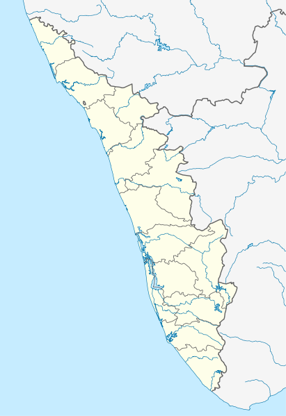

surrounded by swaying coconut trees, the wide blue sky, singing birds, and breeze that’ll soothe your tired mind. The only way you can ever explore the beauty of the waters is through means of Alleppey backwater boat ride
62 km from kochi.
Alleppey, the Venice of the East.
"The name Alappuzha means “home to water sources”, it got this name since the place is circled by sea and a network of rivers."
There are a lot of activities one can get involved while you are in Alleppey. Enjoying a backwater tour watching the daily routines of the villagers, stay along within one of the villages and observing the lifestyle of ordinary people, exploring the beaches and watching sunsets from the lighthouses, go around having a distinct shopping experience with floating Triveni- a floating market, , purchasing Jewelry, handloom items, and handicrafts at affordable rates, can add to spent some quality time in Alleppey.
There is a vast area of paddy fields that makes a green cover besides the lake. So much so, that the coconut trees on either side, the green paddy fields make the water also look green!
"Reaching to Alleppey backwaters while August- September you will be able to witness the practice sections for the Snake boat races."
Alleppey backwaters is also a famous venue for hosting Snake boat races, the start of boat races was on the visit of our former Prime Minister Jawaharlal Nehru to Alleppey and he got pretty much impressed by the same and came up with the idea of conducting boat races every year and thus Nehru Trophy Boat Race after his name got fame all around the world and there will be a lot of people who gather together to witness this event.
The place is called backwaters because the lake water is actually fresh river water that comes down from the river and is then used for the paddy fields whenever the need be, and later the lake water as it goes ahead, merges with the ocean in Kochi.
"Houseboats of Alappuzha Backwaters"
If you are a travel enthusiast looking for an immensely relaxing travel experience the exotic Alappuzha backwater tour in houseboats will always be something that stays forever in your memory.
To experience one of the best backwaters in Kerala you must visit Alleppey and take a houseboat trip. The most suitable time to visit Alleppey is from September to March, with its best climate on the offset of Monsoon and the chilling climate one can stay relaxed and tranquil on the boat deck relishing the lake and its cool breeze.
the 'date' with monsoon season lives up its best as you see water, clouds, fog and the lake merge together.
It is also the access point for the annual Nehru Trophy Boat Race, held on the Punnamada Lake, near Alappuzha, on the second Saturday of August every year. This is the most popular and competitive boat races in India.
 -->